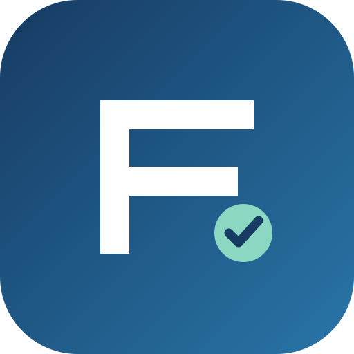

NILANJANC
Personal Assistant
Your day, organised.
Good day.
Keep important things moving.
0open tasks
Quick add
Nothing here yet. Add your first task above.
Turn a message into tasks
Paste an email or WhatsApp message. Each non-empty line becomes a task.
Gmail monitoring for your two accounts and WhatsApp alerts need secure account authorisation and a backend. They are not connected yet. This app will never ask you to paste an email password here.